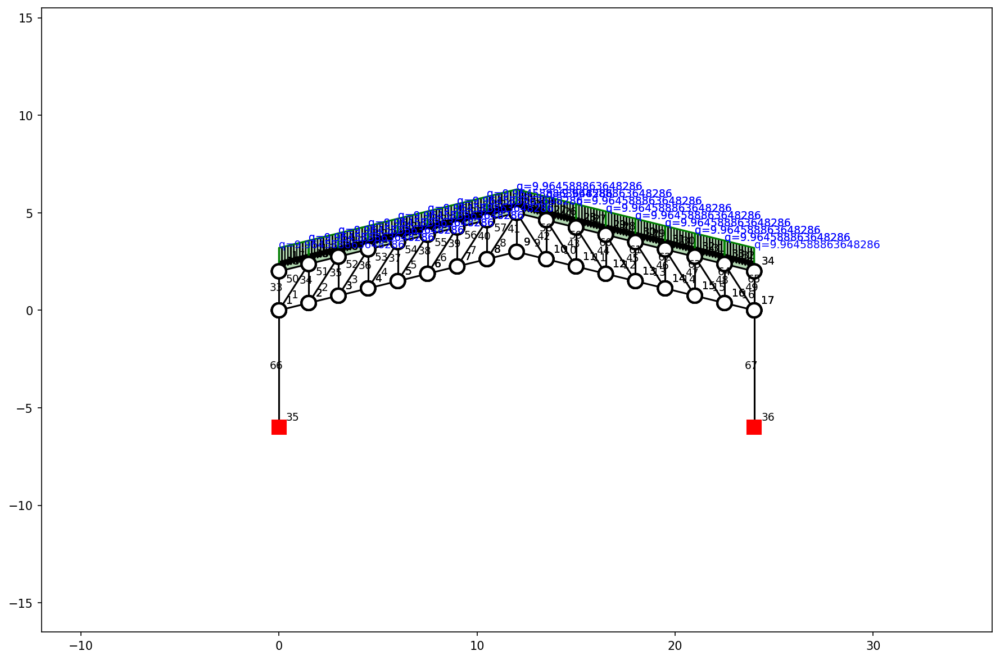
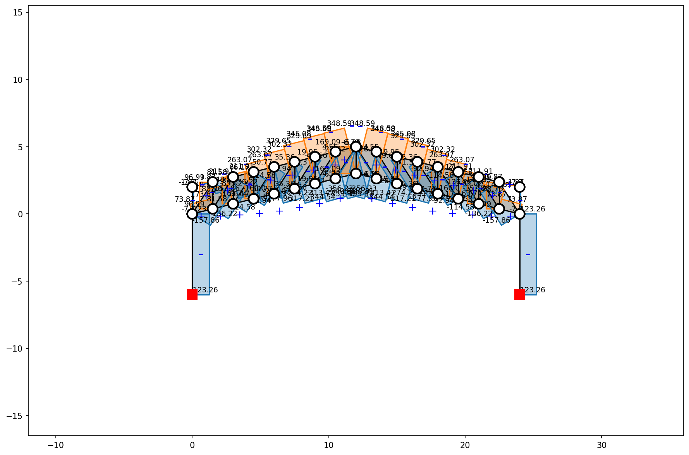
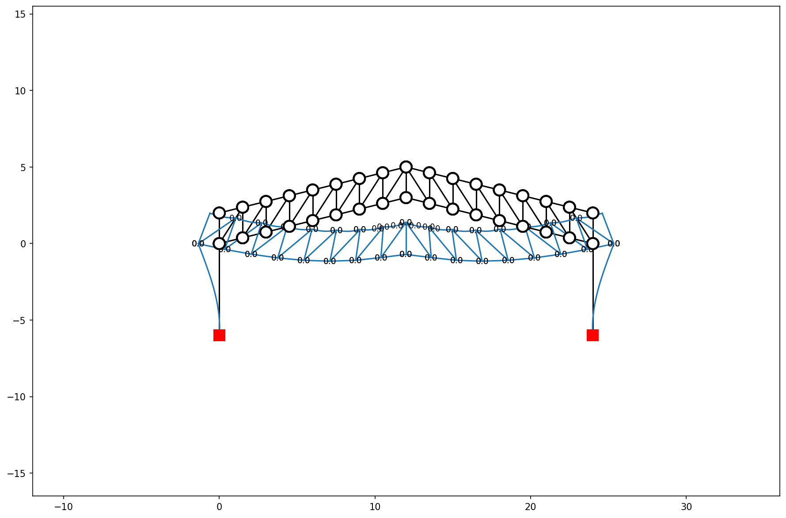
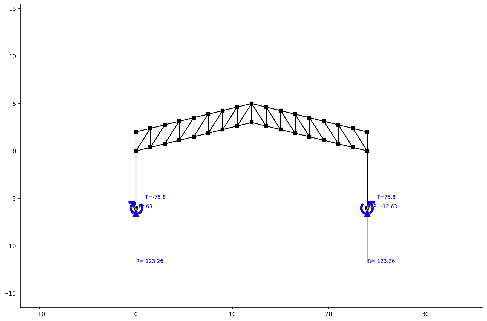
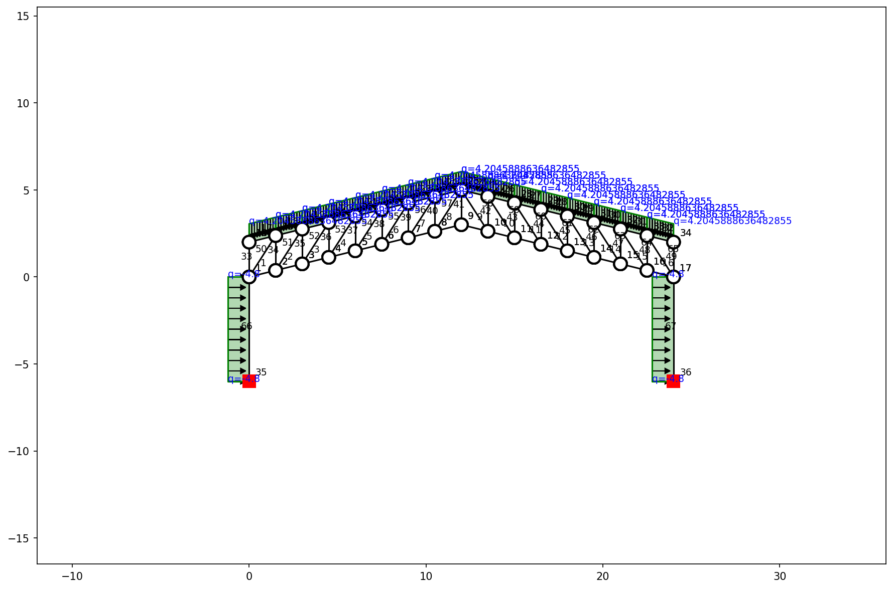
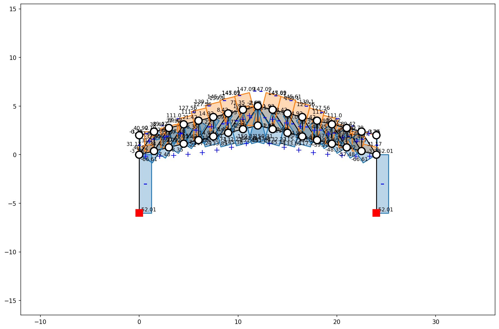
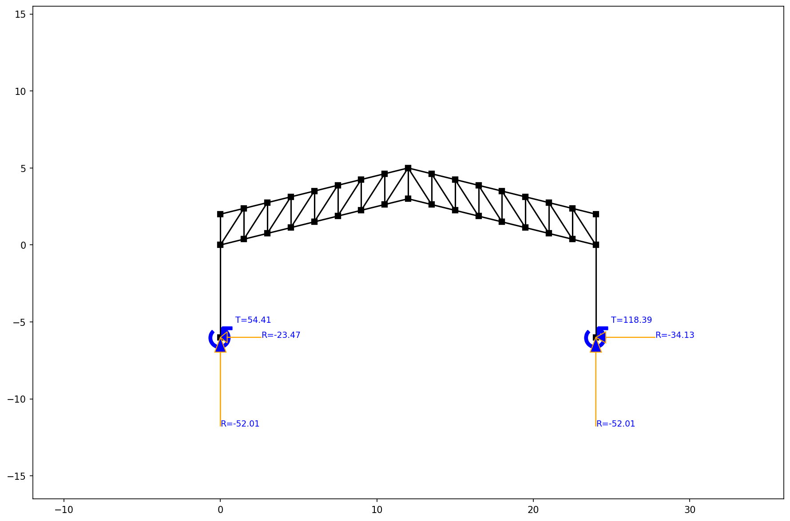

Pickleball Court — Structural Optimization Report
1. Truss Configuration
| Parameter | Value |
|---|---|
| Span | 24.0 m |
| Depth | 2.0 m (constant between chords) |
| Center Rise | 3.0 m |
| Column Height | 6.0 m (fixed base) |
| Panels | 16 @ 1.5 m |
| Type | Two-Slope (Gable) Symmetrical Pratt Truss |
| Supports | Fixed-base steel columns (2 nos.) |
| Steel Grade | A36 (Fy = 36 ksi) |
2. Applied Loads
Gravity Loads
| Component | Value |
|---|---|
| Dead Load (Roof + Ceiling) | 3.0 kN/m (0.5 kPa × 6m trib.) |
| Truss Self-Weight | 0.504 kN/m (1606.7 kg / 24m) |
| Total Dead Load (D) | 3.504 kN/m |
| Live Load (L) | 3.600 kN/m (0.6 kPa × 6m trib.) |
Earthquake (Static Method — NSCP)
| Parameter | Value |
|---|---|
| Seismic Coefficient (\(C_s\)) | 0.2 (Zone 4, Soil Type D, R=8.5) |
| Seismic Weight (\(W\)) | 84.09 kN |
| Base Shear (\(V = C_s \times W\)) | 16.82 kN |
| Lateral q on each column (\(V / 2 / h\)) | 1.40 kN/m |
Wind Load
| Parameter | Value |
|---|---|
| Wind Pressure | 800 Pa |
| Tributary Width | 6.0 m |
| Lateral Load on Columns | 4.8 kN/m (800 Pa × 6m) |
3. Load Case Summary
Axial Forces (kN) per Load Case
| Member Group | LC1 — Gravity Only | LC2 — Gravity + EQ | LC3 — Gravity + Wind | Governing |
|---|---|---|---|---|
| Top Chord | -359.97 | -281.94 | -151.89 | -359.97 |
| Bottom Chord | 348.59 | 273.03 | 147.09 | 348.59 |
| Vertical Webs | 169.09 | 132.44 | 71.35 | 169.09 |
| Diagonal Webs | -157.86 | -123.64 | -66.61 | -157.86 |
| Columns | 123.26 | 96.54 | 52.01 | 123.26 |
Support Reactions per Load Case
| Reaction | LC1 — Gravity Only | LC2 — Gravity + EQ | LC3 — Gravity + Wind | Governing |
|---|---|---|---|---|
| Vertical (\(F_y\)) | 123.26 | 96.54 | 52.01 | 123.26 |
| Horizontal (\(F_x\)) | 12.63 | 18.30 | 34.13 | 34.13 |
Governing Vertical Reaction:
123.26 kN(LC1: Gravity Only) Governing Horizontal Reaction:34.13 kN(LC3: Gravity + Wind)
4. Deflection Check
- Max Deflection:
0.07 mm - Deflection Ratio (L/d):
359185(Target > 240) ✅ PASS
5. Optimized Member Selection (Governing Forces)
| Group | Selected Shape | Weight (plf) | KL/r | Gov. Force (kN) | Capacity (kN) | Governing LC |
|---|---|---|---|---|---|---|
| Top Chord | 2L3-1/2X3X1/4LLBB |
10.8 | 55.3 | -359.97 | 387.62 | Gravity Only |
| Bottom Chord | 2L3X2-1/2X1/4LLBB |
9.0 | 64.8 | 348.59 | 380.48 | Gravity Only |
| Vertical Webs | HSS3X1X3/16 |
4.3 | 207.2 | 169.09 | 171.51 | Gravity Only |
| Diagonal Webs | HSS4.500X0.125 |
5.8 | 71.3 | -157.86 | 176.38 | Gravity Only |
| Columns | W6X15 |
15.0 | 162.9 | 123.26 | 167.74 | Gravity Only |
- Total Steel Weight:
1606.7 kg - Estimated Steel Cost:
PHP 96,399.89(@ PHP 60/kg)
6. Substructure Design
Design assumptions:
| Parameter | Value |
|---|---|
| Concrete Strength (\(f'_c\)) | 21 MPa (3000 psi) |
| Rebar Yield Strength (\(f_y\)) | 275 MPa (Grade 40) |
| Allowable Soil Bearing (\(q_a\)) | 100 kPa |
| Governing Vertical Reaction (\(P_u\)) | 123.26 kN |
| Governing Horizontal Reaction (\(H_u\)) | 34.13 kN |
Steel Base Plate
| Parameter | Value |
|---|---|
| Column Shape | W6X15 (d ≈ 152mm, bf ≈ 152mm) |
| Base Plate Dimensions (B × N) | 252 mm × 252 mm |
| Base Plate Thickness (\(t_p\)) | 10 mm |
| Actual Bearing Stress | 1.94 MPa ≤ 11.60 MPa (✅) |
| Anchor Bolts | 4 — 16mm Ø |
Concrete Pedestal
| Parameter | Value |
|---|---|
| Dimensions | 400 mm × 400 mm × 600 mm |
| Main Reinforcement | 4 — 16mm Ø bars |
| Lateral Ties | 10mm Ø @ 200mm O.C. |
| Anchor Bolts | 4 — 16mm Ø (embedded 500mm) |
Isolated Square Footing
| Parameter | Value |
|---|---|
| Dimensions | 1.0 m × 1.0 m × 0.30 m |
| Actual Bearing Pressure | 82.2 kPa ≤ 100 kPa ✅ |
| Bottom Reinforcement | 12mm Ø @ 200mm O.C. (Both Ways) |
7. Structural Plots
Structure & Applied Loads (Gravity)

Axial Forces (Gravity)

Deflection (Gravity)

Support Reactions (Gravity)

Structure & Loads (Wind Case)

Axial Forces (Wind Case)

Reactions (Wind Case)
